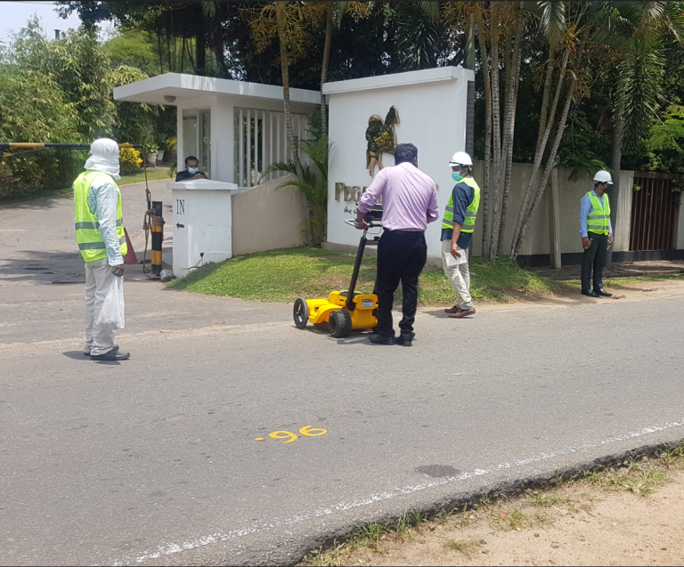
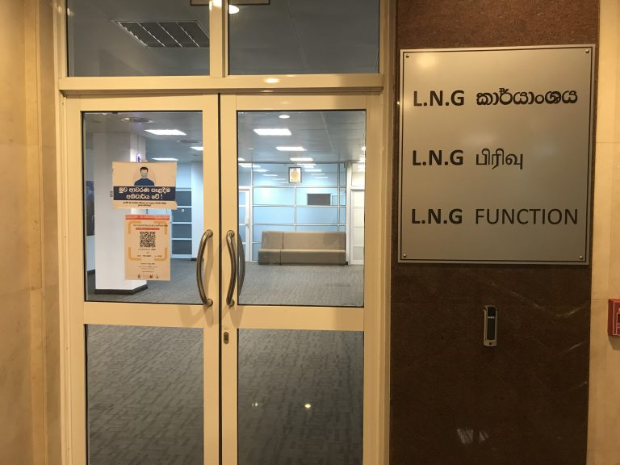

Regasified Liquefied Natural Gas (R – LNG) Pipeline Project
Construction of a Regasified Liquefied Natural Gas (R-LNG) Pipeline from Floating Storage Regasification Unit (FSRU) located around 5km off the Kerawalapitiya coastal belt to existing and future Kelanitissa and Kerawalapitiya Power Plants.

Brief Description of the project
A Floating Storage Regasification Unit (FSRU) is to be located around 5 km off the Kerawalapitiya coastal belt and a Regasified Liquefied Natural Gas (RLNG) pipeline will be deployed from FSRU location to the existing and future Power Plants at Kelanitissa and Kerawalapitiya.
Expected Benefits of the project
It has been already decided to convert Kelanitissa & Kerawalapitiya existing power plant complexes to operate as Natural Gas Powered Power Plants in Future. By completing this pipeline project, the required Regasified Liquefied Natural Gas (RLNG) for Kerawalapitiya & Kelanitissa power plant complexes will be supplied.
Natural Gas is a relatively clean fossil fuel source which will reduce the environmental emissions and impacts which results from the combustion of conventional fossil fuels such as coal when producing electricity.
Expected Benefits of the project
Present Status
- CPC has formed a new function named the “LNG Function”.
- Project Director was appointed on 27.01.2021
- The Tender Documents were finalized after several months of extensive scrutinizing and floated on 18.02.2021
- Bids shall close at 11:00 AM Sri Lanka Standard Time on 18.06.2021.
- A Pre-Bid Meeting was conducted on 23.03.2021 and a site visit was conducted on 24.03.2021
- An underground Utility Mapping Survey along the proposed pipeline route is currently in progress
